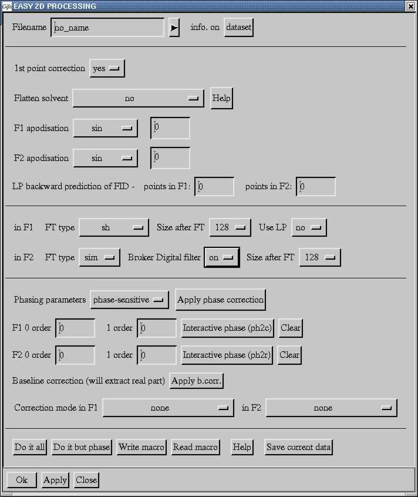
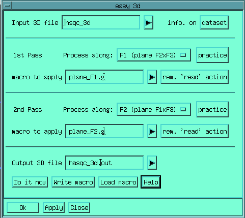

Some command are strictly restricted to 2D or 3D handling or processing. First you should learn how to use the easy2d / easy3d macro, and when you are at ease with this processing switch to more specific commands.
This macro has been designed to help the user in processing every day 2D data-sets. It consists simply in filling each field of the formbox.

Filename is the name of the raw data-set which will be loaded before processing.
If you click on the dataset button,
you will see (in the terminal window) the characteristic of the file currently
selected.
1st point correction modifies the data-set in order to reduce the 't1-ridges'.
Flatten solvent let you choose the way you will (or not) remove the water or other solvent. The solvent being located at the center of the spectral width.
All F1 and F2 apodisations are fully available.
As well as the sizes and the types of the Fourier transform
The phase corrections and the base-line corrections can be chosen interactively. The applied phases are cumulated in the 4 independent phase parameters displayed on the form.
Finally a set of action buttons permits to realize all or some of these operations, additionally, the processing set-up can be stored as a macro file, which when executed latter on, realizes the very same processing. This macro file can also be read back and used to fill the fields of a new form, and the current data can be saved on demand.
The macro will switch by itself to on-file processing if the file is too large to be processed in memory. In which case, you will have to ressort to the additionnal 2D_on_file menu for further interaction with this 2D file.
Processing will switch automatically to on-file processing if the size of the data-set is too large to be handled in memory. In which case, the write macro action will write a on-file processing macro
This macro has been designed to help the user in processing every day 3D data-sets. Its use is very different from the easy2d macro.

The
principle is the following
Input 3D
file is the name of the raw data-set which will be processed
if
you click on the dataset
button, you will see (in the terminal window) the characteristic of
the file currently selected.
You select the kind of plane you want to process during the pass, then clicking on practice, you will get the first plane as 2D, and will be able to find correct processing conditions with the easy2d user interface.
Once set-up, write the macro with the default name (for instance plane_F1.g if processing F1 planes), then hit the rem. 'read' action button in order to adapt the macro to 3D processing.
Using the Do it now button, will start the processing, using the defined macro for all selected planes of the 3D.
You can choose to have only on pass processing, by choosing 'none' as plane type for one of the pass. If you choose to have two passes, then a intermediate file will be created.
The write macro and Load macro buttons have the same meaning as in easy2d.
Permits to access directly any row (along F2) or column (along F1) of the data set. It is put into the 1D buffer and is displayed in the 1D window. In 3D, will extract rows and cols from the last selected plane (see PLANE).
In 2D will compute the projection of the current data-set along
one axis. Axis along which the projection is computed has to be
entered, thus PROJ F1, will compute the projection along F1 onto F2.
Two algorithms are available : mean value or skyline. Result will be
put into 1D buffer.
In 3D, the projection along one axis, onto a
plane will be computed and put into the 2D buffer
On the other
hand, the macro proj_loc computes the projections of a defined region
of the spectrum.
In 2D, permit to go back and forth from ITYPE=1
to ITYPE=2 data-sets by changing
the way the imaginary part is interleaved, i.e. the imaginary part is
exchanged between F1 and F2 axes. For instance the following sequence
:
Gifa> FT F2 FLIP FT F1
will
perform the classical complex Fourier Transform (not hypercomplex).
These commands are used when processing phase modulated data-sets.
The sequence :
Gifa> REVF F2 RFT F2
FLIP REVF F1 INVF FT F1 FLOP MODULUS
will perform the
computation of a phase-modulated data-set acquired on a BRUKER
spectrometer in sequential mode.
In 3D, you can exchange the
imaginary part of the F3 axis with the F1 or F2 axis.
Symmetrises the current 2D relative to the main diagonal (COSY-type). Each point is compared to its symmetrical, and is replaced by either the mean value of both location, or the smallest of both location.
Transposes the 2D matrix . The sizes of the matrix must be power
of two for this command to be used. After transposition, the two
dimensions are completely permuted. In 3D, 2 dimensions will be
exchanged by the TRANSPOSE
process.
Transposition is not a natural step when working with
Gifa, all the processing can always be performed randomly in any
axis.
The transpose process is performed in-place and is very
time consuming. On typical systems it is probably faster not to
transpose when processing the data set. On very small system with
very limited physical memory, it may be faster to use transpose. Try
comparing
Gifa> FT F2 FT F1 ; normal
processing
to
Gifa> FT
F2 TRANSPOSE FT F2 ; transpose during process
on your
system
Up to now, it seems that TRANSPOSE
is completely buggy in 3D !
Will select a plane from the 3D data-set, and put it in the 2D
buffer. Plane are select by the name of the orthogonal axis : i.e.
Gifa> plane F2 index
will
select the plane holding the F1 and F3 dimension, at coordinates
F2=index.
Will select a line orthogonal to the currently selected plane. You can choose the coordinates by pointing on the 2D display.
In 2D DIAG will permit to extract the main diagonal of the current data-set. In 3D, it will extract one of the three main diagonal plane of the cube (F1=F2, F1=F3, F2=F3). Extracting the main diagonal 1D of the 3D cube can be done by extracting the 1D diagonal of one of the diagonal plane of the cube.